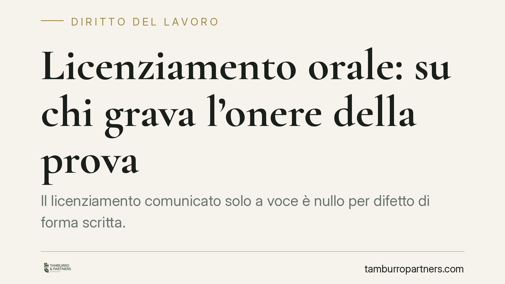

Licenziamento orale: su chi grava l'onere della prova
Il licenziamento comunicato solo a voce è nullo per difetto di forma scritta. Ma la giurisprudenza ricorda un punto decisivo: spetta al lavoratore dimostrare che il rapporto è cessato per volontà del datore. Senza questa prova, anche la tutela più forte resta inaccessibile. Un paradosso solo apparente, con conseguenze concrete sulla strategia processuale.

Il fatto
Il tema del licenziamento orale torna periodicamente all'attenzione della Corte di Cassazione. La questione centrale non riguarda la validità dell'atto — pacificamente viziato — bensì la sua prova in giudizio.
Si segnala in proposito un orientamento che, secondo quanto riportato dalle fonti, sarebbe stato ribadito da una recente ordinanza (n. 4077/2026). Trattandosi di pronuncia dai riferimenti non ancora verificabili in via ufficiale, la si richiama qui solo come occasione di riflessione: il principio esposto è comunque conforme all'indirizzo consolidato della Suprema Corte in materia.
Inquadramento normativo
L'art. 2 della Legge 604/1966 impone che il licenziamento sia comunicato per iscritto. Il difetto di forma scritta non produce una semplice "inefficacia": il licenziamento orale è nullo.
Dalla nullità discende il regime di tutela più protettivo. Per i lavoratori assunti prima del 7 marzo 2015 si applica l'art. 18 della Legge 300/1970 (Statuto dei lavoratori), con reintegrazione nel posto di lavoro e risarcimento. Per gli assunti dal 7 marzo 2015 opera l'art. 2 del D.Lgs. 23/2015, che prevede la tutela reintegratoria piena proprio per i casi di licenziamento nullo, inclusa l'ipotesi di forma orale.
Il punto delicato è però a monte. L'art. 2697 c.c. pone a carico di chi agisce in giudizio l'onere di provare i fatti costitutivi della propria domanda. Chi impugna un licenziamento orale deve quindi dimostrare non solo di non lavorare più, ma che la cessazione dipende da una volontà espulsiva del datore di lavoro, e non — ad esempio — da dimissioni, da un'assenza ingiustificata o da una risoluzione consensuale.
Qui emerge un'asimmetria pratica rilevante. Nel licenziamento scritto l'atto esiste e parla da sé. In quello orale il lavoratore deve ricostruire un fatto privo di traccia documentale. Se la prova resta incerta, la domanda va respinta: non perché il licenziamento orale sia valido, ma perché non se ne è dimostrata l'esistenza.
Va ricordato che l'art. 421 c.p.c. attribuisce al giudice del lavoro poteri istruttori integrativi, esercitabili d'ufficio. Si tratta però di uno strumento che integra, non sostituisce, l'iniziativa delle parti: non sposta l'onere probatorio dal lavoratore al datore.
Implicazioni pratiche
Per il lavoratore il messaggio è netto: la nullità non è automatica da far valere. Occorre un supporto probatorio che colleghi la fine del rapporto a una decisione datoriale.
Per il datore di lavoro la pronuncia conferma che, in assenza di comunicazione scritta, il contenzioso si gioca interamente sul piano della prova. Questo non legittima prassi informali: la forma orale resta un vizio grave. Riduce però lo spazio delle contestazioni meramente asserite.
Sul piano probatorio assumono rilievo i fatti indizianti e i mezzi che consentono di ricostruirli:
- comportamenti concludenti del datore (restituzione forzata di badge, strumenti, chiavi; esclusione dai sistemi aziendali);
- cessazione dei versamenti contributivi e comunicazioni agli enti;
- testimonianze di colleghi o terzi presenti al momento della comunicazione;
- scambi di messaggistica, e-mail o chat successivi, in cui il fatto viene riconosciuto o discusso;
- eventuali registrazioni di conversazioni. Su quest'ultimo punto occorre prudenza: la registrazione di un colloquio cui si partecipa può essere utilizzabile a determinate condizioni, ma la sua ammissibilità processuale e i profili di riservatezza e protezione dei dati non sono automatici e vanno valutati caso per caso.
Cosa fare in concreto
Sul piano operativo, restando su un piano informativo e generale:
- È opportuno che la contestazione dell'assenza di comunicazione scritta venga formalizzata al più presto, per iscritto, verso il datore.
- Il lavoratore può raccogliere e conservare ogni elemento utile a documentare la volontà espulsiva (messaggi, e-mail, testimoni, atti aziendali).
- Vanno tenuti presenti i termini decadenziali: 60 giorni dalla comunicazione (o dalla cessazione di fatto) per l'impugnazione stragiudiziale, e ulteriori 180 giorni per il deposito del ricorso giudiziale o per la richiesta di conciliazione o arbitrato (art. 6 L. 604/1966, come modificato dalla L. 183/2010).
- È prudente verificare il regime di tutela applicabile in base alla data di assunzione, poiché cambia il quadro delle conseguenze.
- Prima di qualsiasi iniziativa, la posizione va valutata alla luce della specifica situazione di fatto e documentale.
Disclaimer
Contributo informativo a cura di Tamburro & Partners - Avv. Giuseppe Tamburro. Non costituisce parere legale.
Ogni storia di lavoro ha i suoi tempi.
Se gestisci HR e vuoi un confronto su contenzioso, ispezioni o licenziamenti, scrivi allo studio. Ti rispondiamo entro un giorno lavorativo.